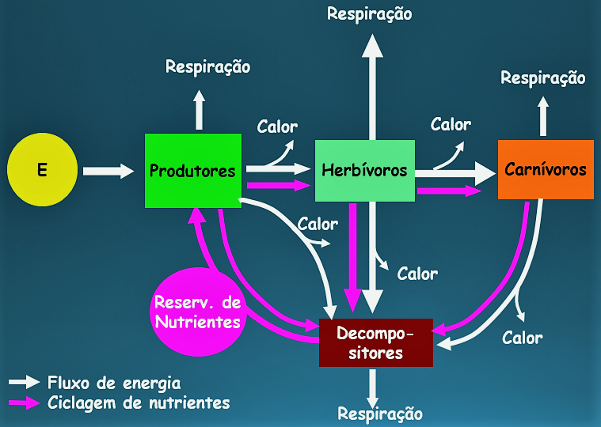

| Luz ➙ Matéria (Orgânica/Inorgânica) ➙ Calor |
A transferência de energia em uma cadeia alimentar é unidirecional, iniciando-se com a captação da energia luminosa pelos produtores e terminando com a ação dos decompositores. A medida em que a energia flui, a matéria circula.
A vida na Terra depende da energia que provém do Sol. Os ecossistemas são, portanto, unidades biológicas mantidas a luz solar. Essa energia luminosa é captada por algas, plantas e bactérias fotossintetizantes e é utilizada na produção de substancias orgânicas; nelas, a energia fica armazenada na forma potencial química. Em cada um dos níveis tróficos, parte da energia armazenada nas moléculas orgânicas é empregada para a realização de trabalho e liberada na forma de calor.
Nos ecossistemas, a quantidade de energia disponível diminui à medida que vai sendo transferida de um nível trófico para outro. Por exemplo:
Os peixes que comem os caramujos recebem deles muito menos energia do que aquela que o caramujo havia recebido da planta, e assim por diante. Isso ocorre porque grande parte das substancias orgânicas que a planta fabrica durante sua vida é consumida na sua própria respiração, que fornece a energia para mantê-la viva.
Além disso, parte da energia, ou matéria, existente nas plantas é perdida pela morte ou por excreção. Assim, a energia das plantas disponíveis para a nutrição do caramujo contém apenas uma pequena parte das substancias que elas produziram durante sua vida.
O mesmo vale para os peixes carnívoros, ainda no raciocínio do mesmo exemplo, para eles sobra apenas a energia contida no caramujo naquele instante em que são predados por eles.
De modo geral, considera-se que cada elo da cadeia recebe aproximadamente 10% da energia que o elo anterior recebeu:
| Planta (15 kcal) ➙ Gafanhoto (1,5 kcal) ➙ Rato (0,15 kcal) ➙ Cobra (0,015 kcal) |
Isso nos permite compreender por que uma cadeia alimentar não tem mais de quatro ou cinco elos. Quanto mais curta for a cadeia, maior será a quantidade de energia disponível para os níveis tróficos mais elevados.